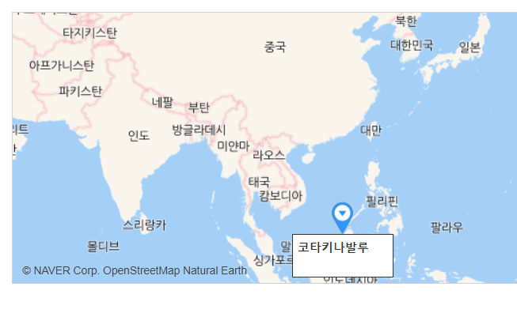

ღ 코타키나발루 소개
말레이시아의 최대 휴양지로 불리는 코타키나발루는 말레이시아 동부에 위치한 보르네오 섬의 도시이다.
인구는 약 47만 명으로 주민의 3분의 1이 중국인이며, 홍콩과의 유대가 깊다. 세계 3대 선셋을 자랑하는 만큼 '황홀한 석양의 섬' 이라고도 불린다. 대체적으로 날씨는 온화한 편이며 주홍빛 노을을 볼 수 있는 섬으로 남녀노소 모두의 휴양지로 인기 만점이다. |
ღ 코타키나발루 위치
|  | 말레이시아에서 떨어져 있는 모습인 코타키나발루는
보르네오섬 북부지방에 위치한 사바주에 속한다.
'코타키나발루'는 깊은 바다와 열대밀림 그리고 동남아 최고봉인 키나발루산과 인접해 있으며 서쪽으로는 모두 해안지역이다.
|